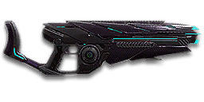

← Back to the Lasher X2 comparison
Sage Guide · Vanu Sovereignty · Heavy Assault
A 1,000-cert heavy gun for the VS Heavy Assault — it lobs slow plasma orbs that explode on contact, splashing everyone nearby. This page teaches you to win fights with it today.
The one-line verdict: an area-denial weapon, not a duelling rifle: its orbs fly at just 100 m/s and take 300 ms to cross 30 m, so you win by aiming at the floor by their feet and letting the splash do the work — and you lose every fair 1v1 against a hitscan gun.

The Lasher X2 · Vanu Sovereignty · 75-orb magazine
Picture the scene, because you've probably lived it: you're sprinting across a courtyard, an enemy appears, and you do everything at once — hold the trigger down while you're still running, then press aim-down-sights (ADS) a split-second later, finger still down. The sight picture snaps in, it looks precise… and your orbs spray everywhere except the man in your crosshair. He kills you. It feels like the game cheated. It didn't — here's what actually happened.
You started firing from a sprint, from the hip. Sprinting is the least accurate state in the game: your cone of fire starts at 7.0° — the widest it can ever be on this gun. Every shot you fire from the hip does not widen it — this gun has zero bloom, so the cone never grows as you fire — but the cone you started with is already 7.0° wide, and the orbs you fired from the hip are still in flight: at 100 m/s, an orb takes 300 ms to cross 30 m, so the fight you think you're aiming at has already moved.
Then you pressed ADS mid-hold — and nothing reset. Aiming down sights does not shrink a cone of fire that is already bloomed. The scope only gives you a precise picture; the bullets keep flying out of the wide cone you built while running and hipfiring. That's the whole mystery: accurate-looking aim, wildly inaccurate gun.
Two timers stack the deck further: your gun needs about 0.3 s to settle after a sprint, and raising the sight itself takes ~0.15 s. Trigger held through all of it means your first half-second of fire is pure confetti.
1 · Feet. Let go of sprint (and the trigger, if you're already holding it). Stop, or drop into a strafe — anything but a full sprint.
2 · Sight. Press ADS and let the sight come up. This takes a heartbeat — your overshield (F) covers it.
3 · Trigger. Now fire. Starting from the aimed cone of 0.3°, your first shots land where the dot points. Aim at the floor by his feet, not at his chest: the orb explodes where it lands, and the splash does the work even when the direct hit would have missed.
Stop → aim → fire. If you take one habit from this entire page, take this one. You'll practise exactly this rhythm in the simulator in section 04.
Four beats, left to right — the same mistake the cards above describe, drawn out.
1 · SprintingYour cone starts maxed at 7.0° — the widest it can ever be.
2 · Trigger heldFiring from the hip while running — every shot adds bloom.
3 · ADS, mid-holdThe sight looks precise — but aiming down sights does not reset bloom.
4 · The sprayBullets fly out of the wide cone you built. The enemy walks away.
Same fight, done right. Each beat has a job, and the order is the whole lesson.
1 · StopLet go of sprint (and the trigger). About 0.3 s for the gun to settle.
2 · AimPress ADS and let the sight come up (~0.15 s).
3 · FireNow fire — from the aimed cone. First shots land where the dot points.
The exception — under ~8 m, skip the whole danceHipfire works, no ADS needed, and stopping is optional. Keep moving, strafe, and let the hipfire ring do the work.
Every enemy infantry has 1,000 health (500 shield + 500 health). Your orb deals 155 direct damage up close, fading to 105 at long range — and a direct hit deals the splash too, so a close direct hit is really 230 damage. Headshots double only the direct half; leg shots count less (×0.9) on the direct half. That gives you three numbers worth memorising — and one twist that makes this gun special:
| Range | Damage per orb (direct + splash) | Head | Chest | Legs | Chest vs shielded Heavy | Trigger TTK → impact TTK |
|---|---|---|---|---|---|---|
| Close · 0–10 m | 230 | 3 | 5 | 5 | 7 | 0.72 s → 0.82 s @10 m |
| Mid · 10–43 m | 230→200 | 3 → 4 | 5 | 5 → 6 | 7 → 8 | 0.72 s → 1.02 s @30 m |
| Far · 43 m+ | 200→180 | 4 | 6 | 6 | 8 → 9 | 0.90 s → 1.40 s @50 m |
Perfect-accuracy times to kill, trigger time: 3 headshots ≈ 0.36 s, 5 chest shots ≈ 0.72 s up close; 6 chest shots ≈ 0.90 s far. Add the orb's flight — 100 ms per 10 m — for the time the target actually falls: 0.82 s at 10 m, 1.02 s at 30 m, 1.40 s at 50 m. A direct hit deals both halves at once (155 + 75 = 230 up close); the splash alone is 75 within a metre and 25 at 3 m — 14 splash-only shots to kill up close, 40 at 3 m, so splash finishes the wounded, it never kills the healthy. Direct-hit damage output is 1,278 per second up close, 1,000 far; splash-only is 417 and 139. Magazine: 75 orbs, with 300 in reserve — 15 close kills per magazine.
Two lines, because one orb deals two kinds of damage. The purple line is the direct hit alone; the teal line is what a direct hit really deals — direct plus the splash that goes off on impact. A near miss only gets the splash, which falls from 75 to 25 between 1 m and 3 m.
Short reload 4.2 s, on empty 5.2 s — the difference is the 1 s chamber time after the last orb. With a 75-orb magazine you reload more often than the chaingun does, and every reload is four seconds of not denying a doorway: reload early, behind cover, and never on empty. The Extended Magazine (section 06) doubles the magazine to 150 orbs.
30 m — your sweet spot: 5 orbs, 0.72 s of trigger time, and the target falls 1.02 s after you start. Lead him by a step — the orb takes 300 ms and a strafing man moves ~0.75 m in that time.
5 orbs · 0.72 s trigger / 0.82 s impact · orb flight 100 ms. Aim at the floor by his feet — a splash within a metre still deals 75. At this range the Lasher is a shotgun that never has to aim.
5 orbs · 0.72 s trigger / 0.82–1.02 s impact · Lead him by a step — at 30 m the orb takes 300 ms and a strafing man moves ~0.75 m in that time. Aim where he's going, not where he is.
5–6 orbs · 0.72–0.90 s trigger / 1.02–1.40 s impact · Aim at the doorway, not the man — deny the lane and let the splash punish anyone who crosses it. A man sprinting across the lane moves 1.5 m during your orb's flight.
6 orbs · 0.90 s trigger / 1.40 s+ impact · Half a second of flight — the target has moved twice by the time the orb arrives. Close in, or pick another fight.
The orb travels 100 m in one second and lives for 4 s — its maximum range is 400 m, but it never gets there in a fight. It does not drop: gravity is zero, so the orb flies dead straight. The hard part is never the drop; it is the wait.
Your cone of fire is the spread of your orbs — the full angle of the cone leaving the muzzle. Smaller is tighter. The Lasher's sighted cone is the tightest in the game — 0.3° — and it never grows as you fire, because bloom is 0. The only thing that changes it is your stance.
| Stance | Cone of fire | Notes |
|---|---|---|
| Standing still, ADS | 0.3° | After ~0.15 s sight-in. Bloom is 0, so the cone never grows. |
| Crouching, ADS | 0.3° | Same cone, lower profile. |
| Crouching, moving, ADS | 0.3° | Crouch-walking keeps the tight cone. |
| Strafing, ADS | 0.5° | One step wider — 0.26 m across at 30 m, still inside the torso. |
| Crouching still, hip | 1.0° | Your tightest hipfire cone. |
| Standing still, hip | 1.5° | 0.21 m across at 8 m. |
| Strafing, hip | 2.0° | 0.28 m across at 8 m. |
| Sprinting, hip | 7.0° | 0.98 m across at 8 m. Never fire from a sprint. |
| Falling, ADS | 3.0° | Don't fire in the air. |
Automatic, 333 RPM, 180 ms between orbs. The Lasher has no burst mode either. Your fire discipline is the lead: each orb takes 100 ms per 10 m to arrive, so the question is never how fast you fire — it is where the target will be when the orb gets there.
The dummy strafes across a 6 m lane at aimed pace (2.5 m/s) — 2.4 s to cross. Your crosshair is fixed at the centre. Click FIRE to launch one orb: it takes 300 ms to cross 30 m, and the dummy keeps moving. Fire when he's 0.75 m short of the centre and the orb meets him there. A direct hit is a kill's worth of damage; a splash within a metre still hurts. Ten orbs — 7 direct hits is good.
Click FIRE ORB when the dummy is about 0.75 m short of the crosshair.
This is the gun's spread, drawn at true scale. The rings are the cone of fire at 8 m, against a torso silhouette. No artist's licence — the diameters come straight from the cone angles in section 04.
At 8 m the ADS cone is a dot — 0.3° is 0.04 m across. The Lasher is the most accurate sighted gun in the game, and it barely matters: your orbs are slow, and the fight is won by the splash, not the cone.
The orb leaves at 100 m/s and flies dead straight — no drop, ever. At 30 m it arrives 300 ms after you fire, and a strafing man has moved ~0.75 m in that time. The rings at the impact point are the splash: 75 damage within 1 m, 25 at 3 m.
The Lasher takes optics, and the choice is simple: the 1× HPR Reflex (30 certs) for doorway work, the 2× VHO Reflex (30 certs) if you hold lanes at 30 m. The 3.4× sights (VMS, V3 Holo) and 4× sights (OG-4, CSZ) exist, and so does the 6× TriGon-6 — all 30 certs — but magnifying a slow orb does not make it arrive faster; at 50 m you are leading a man by half a second, and a bigger picture does not help.
Optics are cheap and the rail is where the real choice lives — but there is no barrel and no ammo, so the orb itself never changes.
| Attachment | Cost | What it does |
|---|---|---|
| HPR Reflex 1× First buy | 30 certs | 1× reflex sight. Your doorway sight — wide view, fast target pickup. |
| VHO Reflex 2× | 30 certs | 2× reflex sight. Your lane sight — a bigger picture at 30 m. |
| HS/NV 1× | 30 certs | Night-vision scope. Situational — night fights only. |
| VMS 3.4× / V3 Holo 3.4× | 30 certs | 3.4× magnification. Skip — magnifying a slow orb does not make it arrive faster. |
| OG-4 4× / CSZ 4× | 30 certs | 4× magnification. Skip. |
| TriGon-6 6× | 30 certs | 6× magnification. Skip — at 50 m you are leading a man by half a second, and a bigger picture does not help. |
| Iron sights | Free | Nothing on the optic slot — the iron sight works; buy the HPR first. |
| Attachment | Cost | What it does |
|---|---|---|
| Forward Grip First buy | 100 certs | Horizontal recoil −25%; equip +0.15 s (0.9 s → 1.05 s). Keeps the orb stream on line during long holds. |
| Laser Sight | 100 certs | Hipfire cone −33% — standing 1.5° → 1.005° (0.21 m → 0.14 m at 8 m). For hipfire rooms. |
| Extended Magazine | 100 certs | Magazine 75 → 150 orbs; equip/unequip +20% (0.9 s → 1.08 s, 0.25 s → 0.30 s). 150 orbs of doorway denial without a reload. |
| Darklight Flashlight | 100 certs | Reveals infiltrators in the dark. Situational — take it when the fight is a night base, not as a default. |
| None | Free | Nothing on the rail keeps the gun as-is — fine while you save for the Grip. |
No barrel attachments exist for this gun, and no ammo attachments exist either. There is no way to make the orb faster or the splash bigger — the chart in section 02 is final.
1,000 certs · the gun, bare
Optic: iron sights · Rail: none
Everything in this guide works with this setup. Buy the gun, learn the lead, add attachments later.
1,130 certs
Optic: VHO Reflex 2× (30) · Rail: Forward Grip (100)
The lane-holder: a 2× picture at 30 m and a quarter less horizontal recoil. This is the setup the rest of the guide assumes.
1,130 certs
Optic: HPR Reflex 1× (30) · Rail: Extended Magazine (100)
150 orbs of doorway denial without a reload. Stand off, hold the lane, let the splash punish anyone who crosses it.
1,130 certs
Optic: HPR Reflex 1× (30) · Rail: Laser Sight (100)
Hipfire rooms: the standing hip cone shrinks to 1.005°, and you aim at the floor anyway.